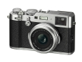

器材库 > 不可换镜头数码相机 > X100F

规格总览
发布日期
2017-01-19
影像规格
影像传感器
X-Trans CMOS III
影像传感器尺寸
23.6×15.6mm
有效像素
2430万
影像处理器
X-Processor Pro
静态图像格式
JPEG, RAW
静态图像尺寸
L: (3:2)6000×4000 / (16:9)6000×3376 / (1:1)4000×4000 M: (3:2)4240×2832 / (16:9)4240×2384 / (1:1)2832×2832 S: (3:2)3008×2000 / (16:9)3008×1688 / (1:1)2000×2000
短片格式
MPEG4-AVC/H.264
短片尺寸
全高清 (1920x1080)：59.94p / 50p / 29.97p / 25p / 24p / 23.98P,36Mbps 连续拍摄:长达14分钟。 高清 (1280x720)：59.94p / 50p / 29.97p / 25p / 24p / 23.98P, 18Mbps 连续拍摄:长达27分钟。
音频格式
线性 PCM / 立体声 48KHz 取样
镜头和对焦
镜头结构
8片/6组
非球面镜片
1片
焦距
23mm
等效35mm画幅焦距
35mm
最大光圈
f/2
最近对焦距离
10cm
自动对焦系统
智能混合AF (TTL对比 AF / TTL相位检测AF)
对焦模式
单幅AF / 连续AF / MF
AF辅助灯/光
有
手动对焦
支持
曝光控制
测光模式
中央重点测光, 点测光, 平均测光, 多重测光
曝光模式
P(程序AE) / A(光圈优先AE) / S(快门速度有限AE) / M(手动曝光)
快门速度
机械快门：（P模式）4秒至1/4000，（所有模式）30秒至1/4000，B门（最多60分钟）, T门30秒至1/4000秒 电子快门：30秒至1/32000秒，B门固定为1秒，T门1秒至1/32000秒
曝光补偿
±5EV以1/3EV级调整
自动包围曝光
±2EV / ±5/3EV / ±4/3EV / ±1EV / ±2/3EV / ±1/3EV
ISO感光度
标准输出感光度: AUTO1 / AUTO2 / AUTO3(高达ISO12800) / ISO200 至 12800(1/3EV 步长)扩展输出感光度: ISO100 / 25600 / 51200
白平衡
自动场景识别 / 定制 / 色温选择 (K) / 预设: 晴天、阴天、荧光灯（日光）、荧光灯（暖白）、荧光灯（冷白）、白炽灯、 水下
自拍
10秒 / 2秒
连拍
约 8.0 fps
胶片模拟模式
15种 (PROVIA/标准、Velvia/高饱和度、ASTIA/柔和、经典正片、PRO Neg.Hi、PRO Neg.Std、黑白、黑白+黄色滤镜、黑白+红色滤镜、黑白+绿色滤镜、怀旧棕褐色、 ACROS、 ACROS+黄色滤镜, ACROS＋红色滤镜、ACROS＋绿色滤镜)
创意滤镜
玩具相机/微缩景观/流行色彩/高调 /低调/动态色调/柔焦/局部色彩（红色/橙色/黄色/绿色/蓝色/紫色）
闪光灯
内置闪光灯
固定
闪光模式
TTL(闪光自动 / 标准 / 慢同步) / 手动 / 强制 /关闭
闪光指数
约4.6(ISO100 · m)
闪光涵盖范围
(ISO 1600) 约 30cm - 9.0m
取景规格
取景器
混合式取景器
取景器尺寸
0.48英寸
取景器像素
约236万
LCD类型
彩色TFT LCD
LCD尺寸
3.0英寸
LCD像素
约104万
视野率
约100%
文件输入/输出
记录媒介
SD/SDHC, SDXC
数据接口
USB2.0, 微型USB
视频/音频接口
D型HDMI接口
无线功能
Wi-Fi
配件端口
热靴, 麦克风输入端子
电源
电池
NP-W126S 锂电子电池
续航能力
静止图像：约270幅(EVF) / 390幅(OVF)视频：全高清: 约60分钟
外观
颜色
银色, 黑色
尺寸
126.5×74.8×52.4mm
重量
仅机身约419g / 含电池和存储卡约469g
其它
工作温度
0 - 40℃
工作湿度
10 - 80%
附件
锂电子电池 NP-W126S，电池充电器 BC-W126，肩背带，镜头盖，金属带夹，保护盖，带夹安装工具，USB线，使用说明书
匿名网友2018-07-20 17:053.94 分
操作性 4.00功能性 5.00美观性 5.00趣味性 4.00耐用性 4.50性价比 0.50解像力 4.00色彩还原 4.50
匿名网友2018-02-03 23:01
产品图 / 样片
X100F
评测 / 相关文章
- 详细内容 （存档）
- 终极文艺形态 富士X100F评测 （存档）
- ［行情］富士X100F热卖 （存档）
- ［资讯］玩转X100F 老炮玩家自制富士木质手柄 （存档）
- ［专题］阳春白雪的双鱼专用相机竟然是？ （存档）
- ［试用］终极文艺形态 富士X100F实拍照片 （存档）
- ［行情］复古随身机 富士X100F国内上市 （存档）
- ［资讯］大开视界 富士FUJIKINA新品器材图赏 （存档）
- ［资讯］富士FUJIFILM X100F官方样片欣赏 （存档）
- ［资讯］大政奉还 富士FUJIKINA新品发布会实录 （存档）
相关文章
- ［影像］送外卖小哥的X100F街头纪录 （原站已下线）
- ［资讯］富士即将发布多款X系列相机固件更新 （存档）
- ［资讯］富士X-Pro2等固件更新发布 （原站已下线）
- ［行情］富士X100F热卖 （存档）
- ［资讯］玩转X100F 老炮玩家自制富士木质手柄 （存档）
- ［专题］阳春白雪的双鱼专用相机竟然是？ （存档）
- ［试用］终极文艺形态 富士X100F实拍照片 （存档）
- ［试用］终极文艺形态 富士X100F评测 （存档）
- ［行情］复古随身机 富士X100F国内上市 （存档）
- ［资讯］大开视界 富士FUJIKINA新品器材图赏 （存档）
- ［资讯］富士FUJIFILM X100F官方样片欣赏 （存档）
- ［资讯］大政奉还 富士FUJIKINA新品发布会实录 （存档）
- ［资讯］富士发布第四代X100系列新品X100F （存档）